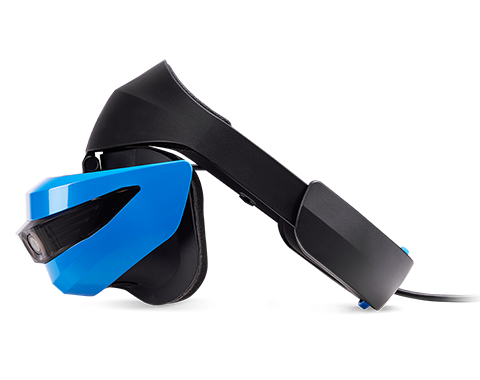

Virtualios realybės įranga į namus – Gimtadienio mugė
2020.10.29 09:54

Meniu Idėjos Vaišės Žaidimai Dekoracijos Dovanos Kalendorinės šventės Teminiai gimtadieniai Atostogos Vaikų darbeliai Vaikiškų švenčių mozaika Kaip suplanuoti vaiko gimtadienį? Kur švęsti? Užsakomos pramogos Užsakomos pramogos Vaikų švenčių organizavimas Dovanos Dovanos kūdikiams Žaislai ir žaidimai vaikams Knygos ir žurnalai vaikams Kūrybinei veiklai Drabužiai Papuošalai Vaiko kambariui Valgomos dovanos Kitos dovanos Užsakomos vaišės Užkandžiai ir karšti patiekalai Saldus stalas Šventinė atributika Šventinė atributika Vaikų švenčių dekoravimas Vaišių dekoravimui Vaikų fotografai Idėjos Vaišės Žaidimai Dekoracijos Dovanos Kalendorinės šventės Teminiai gimtadieniai Atostogos Vaikų darbeliai Vaikiškų švenčių mozaika Kaip suplanuoti vaiko gimtadienį? Kur švęsti? Užsakomos pramogos Užsakomos pramogos Vaikų švenčių organizavimas Dovanos Dovanos kūdikiams Žaislai ir žaidimai vaikams Knygos ir žurnalai vaikams Kūrybinei veiklai Drabužiai Papuošalai Vaiko kambariui Valgomos dovanos Kitos dovanos Užsakomos vaišės Užkandžiai ir karšti patiekalai Saldus stalas Šventinė atributika Šventinė atributika Vaikų švenčių dekoravimas Vaišių dekoravimui Vaikų fotografai
Virtualios realybės įranga į namus
Siūlome išbandyti naujausias VR technologijas! Nustebinti sugebėsime kiekvieną, linksmas akimirkas ir nepamirštamus įspūdžius garantuojame!
Virtualios realybės nuotykius galite patirti atvykę į mūsų virtualų kambarį, kuris yra pirmasis ir didžiausias Klaipėdoje, arba užsisakyti visą įrangą į savo namus ar kitą pasirinktą šventęs vietą.
Įrangos nuoma parai
Nesinori eiti iš namų, bet norisi pramogų? Užsisakykite įrangą į namus, galėsite nustebinti vaikus, draugus ir artimuosius. Mes atvežame įrangą, sumontuojame, apmokiname, o kitą dieną Jūs gražinate. Rekomenduosime žaidimus iš TOP žaidžiamiausių arba galėsite patys išsirinkti, iš daugiau nei 100 žaidimų.
Viskas ko reikia:
1. Elektros prieiga.
2. Televizorius.
3. Kuo daugiau vietos žaidžiančiajam (minimali erdvė 2x2m).
Nuo šiol pas mus galite išsinuomuoti ir naujausius belaidžius akinius, kurių žaidimai yra integruoti pačiuose akiniuose ir galite žaisti net lauke. Galėsite judėti nevaržomi laidų, labai paprasta naudotis ir patogu. Atvažiuojate, pasiimate ir kitą dieną gražinate.
Įrangos nuoma renginiams
Mes galime atvykti į bet kurią Jūsų šventės vietą visoje Lietuvoje. Atvykęs asmuo pasirūpins viskuo, bus atsakingas už įrangos pajungimą, žaidimų atrinkimą ir pritaikymą pagal poreikius. Per trumpą laika gaunate geriausius VR įspūdžius su papildomais efektais. Taip pat pagal poreikį galite užsisakyti ir kelis įrangos komplektus.
*Dėl kainų ir sąlygų galite kreiptis mūsų tel.nr. +37063619509
Norint apsilankyti mūsų virtualiame kambaryje būtina išankstinė registracija telefonu.
Naujiena! Tiems, kas nori dar stipresnių pojūčių !Galėsite išbandyti 5D judančią platformą, išsilaikyti bus tikrai sunku, o papildomi efektai: vėjas, vibracija, nestabilumas, sukuria tikroviškumo jausmą. Pramogą rekomenduojame išsinuomoti: vestuvėms, krikštynoms, gimtadieniams, įmonės vakarėliams ar kitoms šventėms.
5D judančią platformą išbandžiusi mergaitė sakė, kad jausmas kaip tikrose karuselėse, kai važiuoji ir šauki iš baimės! Labai patiko, nori dar kart:
Virtualių išbandymų tėveliai dažnai bijo labiau nei vaikai:
VR Pojūčiai – virtualus kambarys Adresas: H. Manto g. 21, Megaplaza 3 aukštas, Klaipėda Telefonas: +37063619509 Interneto svetainė: https://www.facebook.com/vrpojuciai Apie mus Gimtadienio mugės kontaktai Autorių teisės ir kita intelektinė nuosavybė Reklamos talpinimo taisyklės© 2020 Gimtadienio mugė - Alvilė Rimaitė, visos teisės saugomos. Svetainė pagaminta – vdizainas@gmail.com
Informuojame, kad sklandžiam svetainės veikimui, jūsų naršymo patirties gerinimui bei rinkodarai naudojame slapukus. Paspaudę „Supratau“ arba naršydami toliau sutiksite su slapukų įrašymu. Savo duotą sutikimą bet kada galėsite atšaukti pakeisdami savo interneto naršyklės nustatymus ir ištrindami įrašytus slapukus. Sutinku Daugiau informacijos apie slapukus rasite čia.- VIRTUALIOS REALYBĖS PRAMOGA - VR SPOT
- Virtualios realybes įranga Archives - Virtuali erdvė | VR City
- Virtualios Realybės Įranga - TTAISYKLA
- VRERDVĖ.LT - Virtualios Realybės Pramogos Kaune
- Interaktyvi virtualios realybės kelionė po Čiurlionio ...
- Interaktyvi virtualios realybės instaliacija „Angelų takais“
- Virtualios realybės šalmas ps4: peržiūri, kaip prisijungti ...
- Virtualios realybės (VR) įranga internetu – TECHNORAMA
- Virtualios realybės istorija - VR City
- VIRTUALIOS REALYBĖS AKINIAI (VR) virš 50 modelių Žema ...
- VIRTUALIOS REALYBĖS PRAMOGA - VR SPOT
Maža to, dabar virtualios realybės akiniai nereikalauja didelių finansinių investicijų, nes įsigyti šį įrenginį galima už mažiau nei 15 €. Siūlome patikimų gamintojų kokybiškus virtualios realybės akinius. Čia rasite Samsung, Sponge, Esperanza, Modecom ir kitų prekės ženklų virtualios realybės akinių modelius.
- Virtualios realybes įranga Archives - Virtuali erdvė | VR City
Palygink skirtingų parduotuvių kainas Nuo 10.00 € Virtualios realybės įranga Akcijos, atsiliepimai.
- Virtualios Realybės Įranga - TTAISYKLA
Pasinerkite į virtualų pasaulį. Virtualios realybės (VR) įrangos komplektai kompiuteriams, žaidimų konsolėms ir mobiliesiems įrenginiams. Geros kainos!
- VRERDVĖ.LT - Virtualios Realybės Pramogos Kaune
Virtualios realybės akinių nuoma renginiams, konferencijoms, šventėms. Išsinuomokite virtualios realybės akinius su reikiama įranga ir virtualios realybės žaidimais Vilniuje. Galėsite išandyti įvairaus pobūdžio žaidimų bei kitų VR patirčių. Nuomojami HTC Vive virtualios realybės akiniai.
- Interaktyvi virtualios realybės kelionė po Čiurlionio ...
Virtualios realybės įranga galima naudotis nuo 12 m. Bilieto kaina 10 eurų. Moksleiviams, studentams ir senjorams taikoma 50% nuolaida. Asmenys virš 80 m. amžiaus ir neįgalieji leidžiami nemokamai. Filmo trukmė - 20 min. Seansai vyksta kas pusvalandį.
- Interaktyvi virtualios realybės instaliacija „Angelų takais“
Atrodo aišku, kad 2016 m. Virtualios realybės pramonėje bus svarbūs metai. Tuo metu rinkoje pasirodys keletas vartotojų prietaisų, kurie atrodo, kad galiausiai atsakys į neįvykdytus virtualios realybės pažadus devintajame dešimtmetyje. Tai apima novatorišką "Oculus Rift", kurią 2014 m.
- Virtualios realybės šalmas ps4: peržiūri, kaip prisijungti ...
Pradžia / Virtualios realybes įranga ... Patirk naują pasaulį virtualios realybės patirčių kambaryje Saulėtekyje esančiame studentų miestelyje | Saulėtekio al. 41, Vilnius. Taisyklės. Apmokėjimo būdai. Privatumo politika. Prekių ir paslaugų teikimo sąlygos.
- Virtualios realybės (VR) įranga internetu – TECHNORAMA
Instaliaciją sudaro keturios virtualios realybės įrangos stotelės, vienu metu viena stotele gali naudotis vienas žmogus. Filmo trukmė 20 min. Seansai vyksta kas pusvalandį. Virtualios realybės įranga galima naudotis nuo 12 m. Bilieto kaina 10 eurų. Moksleiviams, studentams ir senjorams taikoma 50% nuolaida.
- Virtualios realybės istorija - VR City
Virtualios Realybės Įranga. 3D Virtualios realybės akiniai VR BOX 2.0. Tinka 3D žaidimams ir filmams, palaiko Android ir Apple iOS platformas. Skirtas įrenginiams su 4,5 - 6 colių ekranais. Platesnis nei įprasta matymo kampas (95 - 100°). Akiniuose įmontuota daug pažangių funkcijų, tokių kaip greitas telefono montavimo rėmelis ...
- VIRTUALIOS REALYBĖS AKINIAI (VR) virš 50 modelių Žema ...
Virtualios realybės įranga į namus. ... Virtualios realybės nuotykius galite patirti atvykę į mūsų virtualų kambarį, kuris yra pirmasis ir didžiausias Klaipėdoje, arba užsisakyti visą įrangą į savo namus ar kitą pasirinktą šventęs vietą. Įrangos nuoma parai.
Maža to, dabar virtualios realybės akiniai nereikalauja didelių finansinių investicijų, nes įsigyti šį įrenginį galima už mažiau nei 15 €. Siūlome patikimų gamintojų kokybiškus virtualios realybės akinius. Čia rasite Samsung, Sponge, Esperanza, Modecom ir kitų prekės ženklų virtualios realybės akinių modelius.
Palygink skirtingų parduotuvių kainas Nuo 10.00 € Virtualios realybės įranga Akcijos, atsiliepimai.
Pasinerkite į virtualų pasaulį. Virtualios realybės (VR) įrangos komplektai kompiuteriams, žaidimų konsolėms ir mobiliesiems įrenginiams. Geros kainos!
Virtualios realybės akinių nuoma renginiams, konferencijoms, šventėms. Išsinuomokite virtualios realybės akinius su reikiama įranga ir virtualios realybės žaidimais Vilniuje. Galėsite išandyti įvairaus pobūdžio žaidimų bei kitų VR patirčių. Nuomojami HTC Vive virtualios realybės akiniai.
Virtualios realybės įranga galima naudotis nuo 12 m. Bilieto kaina 10 eurų. Moksleiviams, studentams ir senjorams taikoma 50% nuolaida. Asmenys virš 80 m. amžiaus ir neįgalieji leidžiami nemokamai. Filmo trukmė - 20 min. Seansai vyksta kas pusvalandį.
Atrodo aišku, kad 2016 m. Virtualios realybės pramonėje bus svarbūs metai. Tuo metu rinkoje pasirodys keletas vartotojų prietaisų, kurie atrodo, kad galiausiai atsakys į neįvykdytus virtualios realybės pažadus devintajame dešimtmetyje. Tai apima novatorišką "Oculus Rift", kurią 2014 m.
Pradžia / Virtualios realybes įranga ... Patirk naują pasaulį virtualios realybės patirčių kambaryje Saulėtekyje esančiame studentų miestelyje | Saulėtekio al. 41, Vilnius. Taisyklės. Apmokėjimo būdai. Privatumo politika. Prekių ir paslaugų teikimo sąlygos.
Instaliaciją sudaro keturios virtualios realybės įrangos stotelės, vienu metu viena stotele gali naudotis vienas žmogus. Filmo trukmė 20 min. Seansai vyksta kas pusvalandį. Virtualios realybės įranga galima naudotis nuo 12 m. Bilieto kaina 10 eurų. Moksleiviams, studentams ir senjorams taikoma 50% nuolaida.
Virtualios Realybės Įranga. 3D Virtualios realybės akiniai VR BOX 2.0. Tinka 3D žaidimams ir filmams, palaiko Android ir Apple iOS platformas. Skirtas įrenginiams su 4,5 - 6 colių ekranais. Platesnis nei įprasta matymo kampas (95 - 100°). Akiniuose įmontuota daug pažangių funkcijų, tokių kaip greitas telefono montavimo rėmelis ...
Virtualios realybės įranga į namus. ... Virtualios realybės nuotykius galite patirti atvykę į mūsų virtualų kambarį, kuris yra pirmasis ir didžiausias Klaipėdoje, arba užsisakyti visą įrangą į savo namus ar kitą pasirinktą šventęs vietą. Įrangos nuoma parai.
